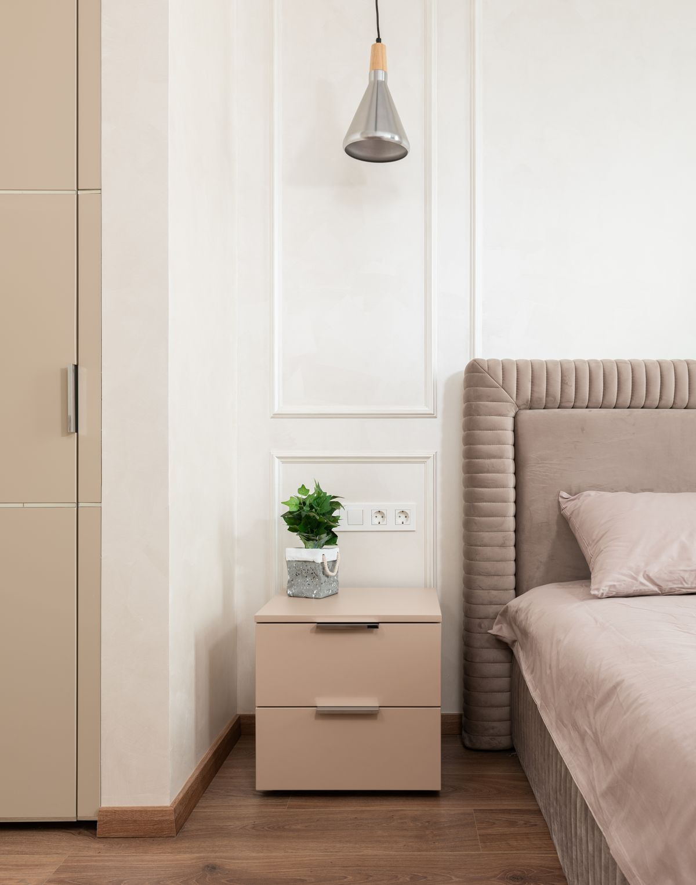

Vous nous racontez.
Les pièces concernées, vos envies de couleur et vos contraintes : nous faisons le point ensemble.
NOS PRESTATIONS
De la préparation des surfaces à la dernière couche, découvrez les travaux de peinture proposés pour votre maison.

01 / PEINTURE INTÉRIEURE
Un séjour plus lumineux, une chambre apaisante ou un mur qui donne du caractère : la peinture peut transformer votre intérieur sans tout changer.
Nous discutons du rendu souhaité, de la lumière et de l’utilisation de la pièce pour choisir les teintes et les finitions.
02 / PEINTURE EXTÉRIEURE
Les surfaces extérieures sont exposées à la pluie, au soleil et au temps. Leur remise en peinture se prépare selon l’état du support et les conditions d’intervention.

03 / PRÉPARATION & FINITIONS
Une peinture soignée commence par des surfaces bien préparées. La préparation est définie selon leur état et la finition recherchée.
COMMENT ÇA SE PASSE ?
Les pièces concernées, vos envies de couleur et vos contraintes : nous faisons le point ensemble.
Les supports, les finitions et le périmètre des travaux sont précisés dans le devis avant de commencer.
Protection des lieux, préparation des surfaces et mise en peinture, jusqu’aux dernières retouches.
AVANT DE VOUS LANCER
Un autre point à éclaircir ?
Parlons-en ensemble ↗
Oui. Le projet peut concerner une chambre, un séjour ou plusieurs espaces. Les surfaces et la préparation nécessaire sont précisées lors de l’échange et dans le devis.
La lumière, l’usage de la pièce et vos goûts guident le choix. Une finition mate, veloutée ou satinée ne donne pas le même rendu : nous en discutons avant les travaux.
Les petits objets et éléments fragiles sont à retirer. Le déplacement du mobilier et la protection des sols sont à convenir selon la pièce, pour préparer l’intervention dans de bonnes conditions.
De la surface, de l’état des supports, de la préparation nécessaire, de l’accès et des produits retenus. Le devis détaille les prestations prévues avant tout engagement.
Le secteur présenté pour cette entreprise fictive est Plestin-les-Grèves et ses alentours, notamment Locquirec et Lannion. Pour une entreprise réelle, les déplacements seraient à confirmer selon le chantier.
UNE IDÉE EN TÊTE ?
Plestin-les-Grèves et ses alentours · Intérieurs & extérieurs